Kit para Banho Cães filhotes: Shampoo, Condicionador e Perfume Baby Cachorro Filhote Sanol
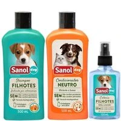
R$ 39,90

Tudo para seu pet viver feliz!
Na ItaPets, você encontra os melhores produtos para cuidar, mimar e proteger quem te dá amor todos os dias. De brinquedos a alimentação, de conforto a estilo — oferecemos qualidade, carinho e variedade para cães, gatos e outros companheiros de quatro patas. Porque seu pet merece o melhor!

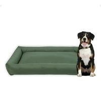
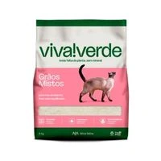
Areia higiênica com grãos mistos, ideal para o conforto e higiene do seu gato, disponível em embalagens de 4 kg e 10 kg.
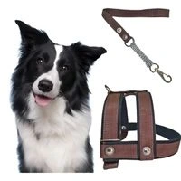
Peitoral totalmente produzido em fita, reforçado com borracha e acabamentos em veludo, costurado, ferragens niqueladas, com alto índice de durabilidade.
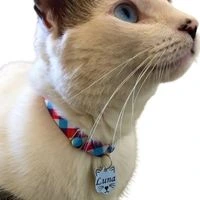
Pingente de identificação prateado com gravação a laser, material de elástico
resistente e ajustável para
conforto do seu gato.
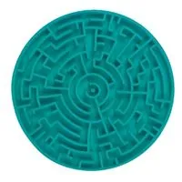
A área de alimentação do seu animal de estimação parecerá mais arrumada e limpa com o Comedouro Pet Games Patê Cachorro Lambedouro Comerouro.
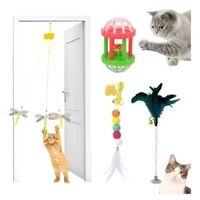
Vem com base para ficar no batente da porta e elástico resistente que estica. Seu animal mais feliz e gastando muita energia.
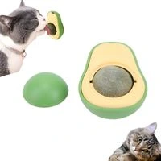
Proporciona uma diversão diária para o seu gatinho com o nosso ABACAT. Basta colar na parede e observar o seu gato interagindo com o aroma e sabor das ervas presentes na bolinha, que vem dentro do abacate.
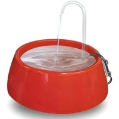
Agora, a área de alimentação do seu animal de estimação parecerá mais arrumada e limpa com o Bebedouro Mec Pet Fonte bebedouro para cães e gatos little mec pet branca.
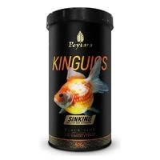
Poytara Kinguios Sinking Black Line é um alimento completo e balanceado, desenvolvido especialmente para kinguios e carpas filhotes ou juvenis.
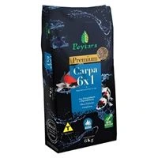
Poytara Premium 6x1 Com Alho é um alimento completo e balanceado, desenvolvido especialmente para carpas de todas as idades.
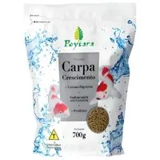
Ração Poytara Carpa Crescimento 700g é um alimento extrusado de alta qualidade, desenvolvido especialmente para carpas e peixes de lago em fase de crescimento.